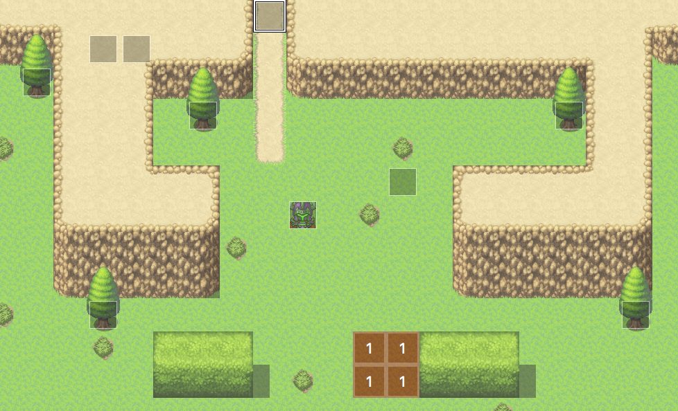
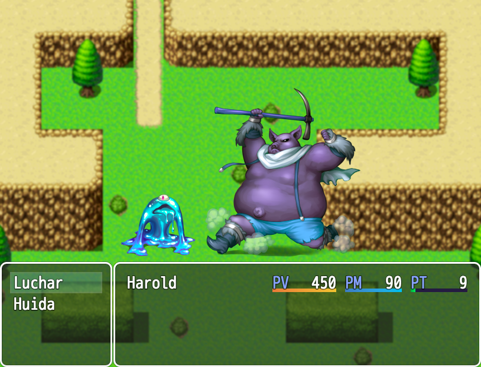
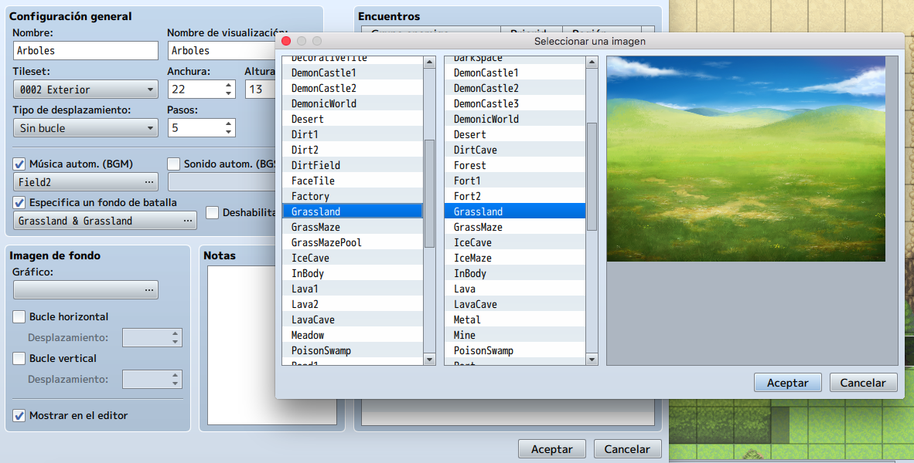
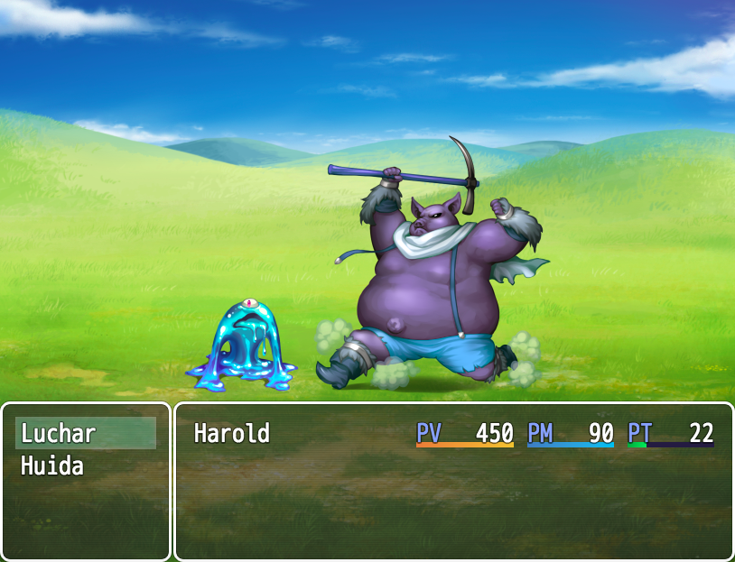

En este tema aprenderemos a definir las zonas de nuestro mapa donde realizaremos las batallas con los
Grupos de enemigos con lo que se denominan las Regiones.
• Aprender a crear Regiones para nuestras batallas.
Las Regiones definen como la zona de nuestro mapa donde se pueden encontrar ciertas tropas de enemigos. RMMV
te permite colocar hasta 255 Regiones distintas en un solo mapa, aunque será difícil usar tantas en
cualquier lugar excepto en un mapa del mundo más grande.
RMMV integra el creador de Regiones en la pestaña "R" de los conjuntos de tilesets. Esto significa que puedes
pintar mosaicos de Región usando el modo de edición de mapa.
Vamos a buscar una zona solitaria de nuestro mapa, cambiaremos al conjunto de mosaicos R y haremos un pequeño
cuadrado o rectángulo con la Región 1.

¡Juguemos a probar el juego con los cambios apropiados! Recuerda que tenemos que dar un númetro de pasos antes de que aparezca la batalla en la Región.
Si no hemos establecido un fondo de batalla adecuado de antemano, la pantalla de combate se parecerá a la siguiente:

Cuando no estableces un fondo de batalla predeterminado para un área determinada, RMMV solo muestra una
imagen estática del entorno actual del jugador como fondo de batalla. Como puedes ver, se nos queda un poco
decepcionante. Así que cierre la prueba de tu juego y dirígete a las propiedades del segundo mapa una vez
más.
Busca Especifica un fondo de batalla, activa la casilla de verificación y explora los
gráficos. Usa Grassland, por ejemplo, tanto para el primer plano como para el fondo, pero puedes elegir el
que más te guste, siempre que sea similar al entorno donde se va a realizar la batalla.

Volveremos a probar nuestro juego y veremos la diferencia. El fondo ahora es mucho más real.
